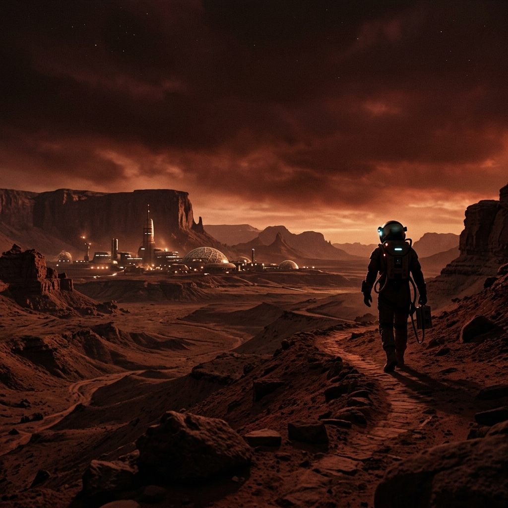
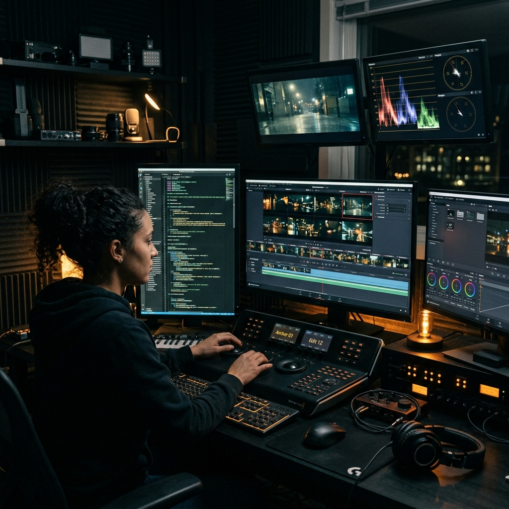

3D Neural Portal
The Neural Tunnel
Scroll to fly through Baizid's automated generative matrix.

SIGNAL ZERO / VEO 3
seed: 8492048512
STATUS: RENDER_STABLE
CLONE_DUPLICATION_A/B
trolley_problem_solved = false
DIFFERENCE: 0.00%

N8N_WORKFLOW_INGESTION
cron: */60 * * * *
UPLOADING REEL_0492.MP4
PINTEREST_SEO_MATRIX
traffic_generation: evergreen
MONETIZED via GUMROAD + MAKE
 PHILOSOPHY & LIFTING
PHILOSOPHY & LIFTING
trolley_weight = 405_lbs
SPARRING_PARTNER: DEPRECATED